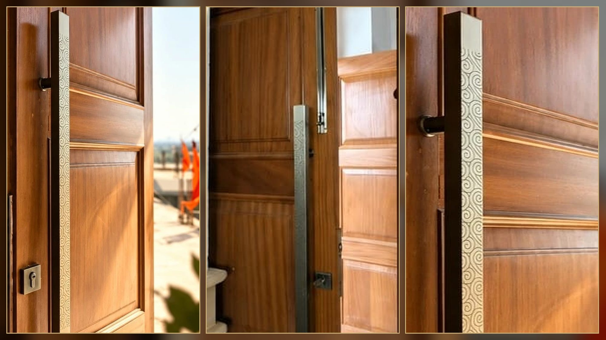
Royal Wood Polish, Deco & Interiors
Complete polish work for homes, factories and buildings — and every kind of woodwork too. Doors, windows, bedroom sets, wardrobes, chairs, tables and deco: made, installed and finished by our own team.
Polish is our specialty — and we build all kinds of woodwork too
We are polish contractors for homes, factories and buildings. Around that core we manufacture furniture, doors, windows and deco, and take on complete buildings as one contract.
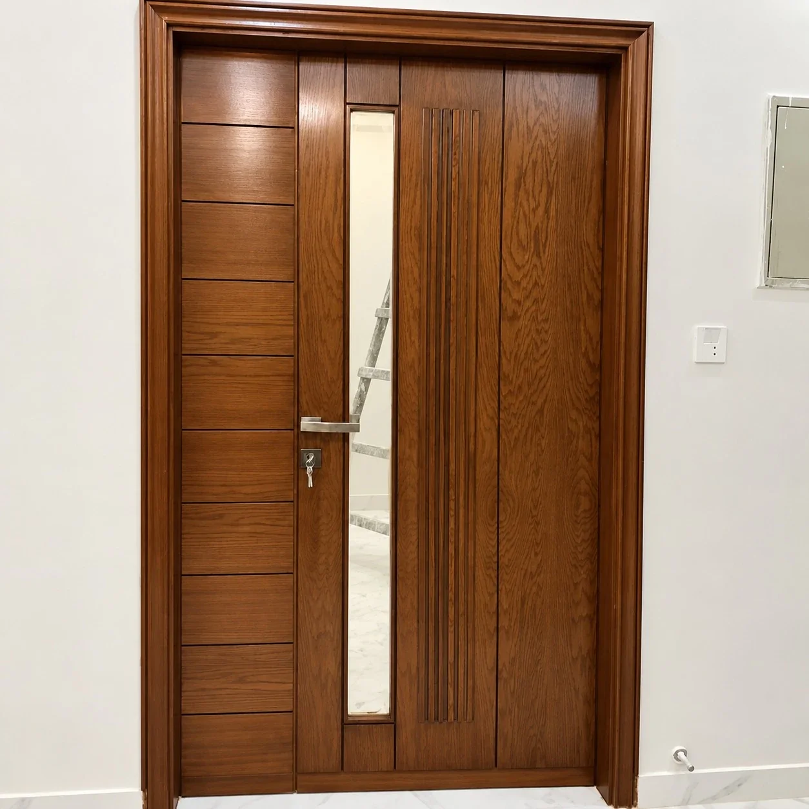
Polish Work
Homes, factories & buildings. PU, melamine, lacquer, matt or glossy — on new work and on pieces you already own.
View work →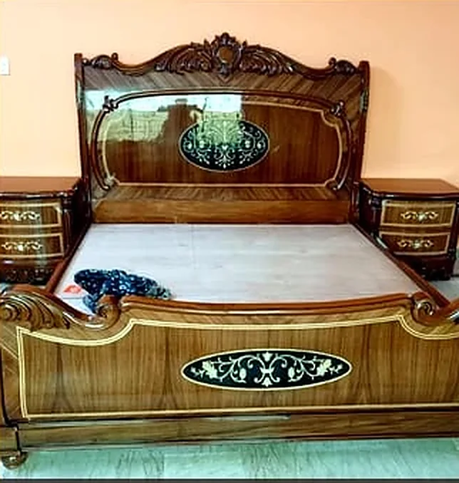
Furniture & Bedroom Sets
Beds, wardrobes, dressing tables, chairs and tables — made in our workshop and polished to one finish.
View work →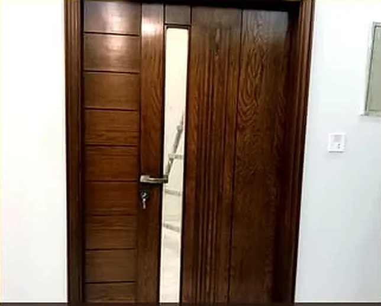
Doors, Windows & Deco
Doors and windows made, hung and polished; wall panels, ceilings, TV walls and kitchens.
View work →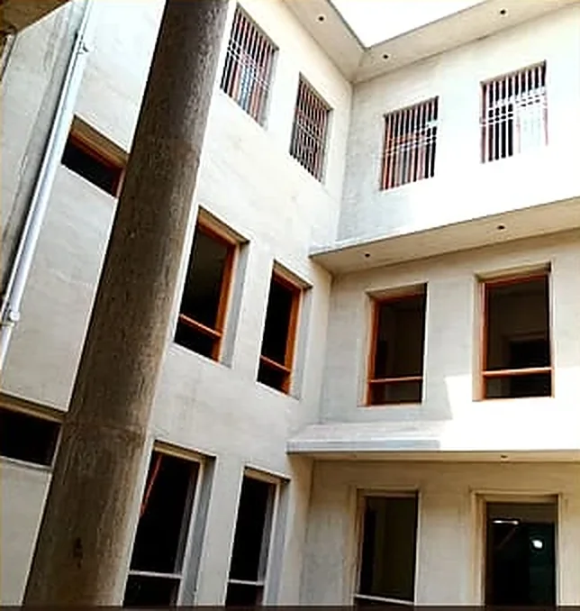
Building & Factory Projects
Full buildings, big project sets and factory polish contracts handled by one contractor.
View work →Drag the handle — see what polish changes
A raw solid wood main door on the left, the same door after staining and PU polish on the right. Every finish we apply is prepared the same way: sanded in stages, sealed, stained to an approved sample and built up in thin coats.
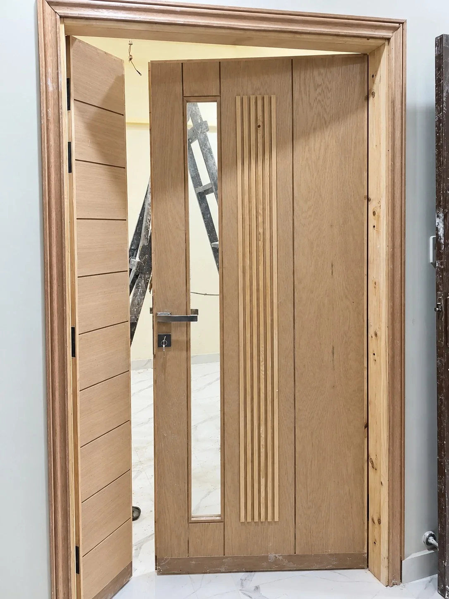
BeforeAfterFrom raw woodwork to final finish
Consultation & Measurement
You tell us the scope — polish only, specific pieces, a factory contract or a complete building. We visit, measure and advise.
Design & Finish Samples
Designs, wood types and finish samples on your actual wood, with a clear itemised quotation.
Manufacturing & Installation
Doors, windows, furniture and deco built in our workshop and installed on site by our team.
Polish & Handover
Every surface stained and finished by hand and spray, inspected with you in daylight, then handed over.
Polish-first craftsmanship from a team that builds
Polish is our specialty
Most workshops treat polish as the last step. For us it's the main event — done properly, in the finish you choose.
Factory & contract experience
Door sets and furniture finished in volume — the same standard on the hundredth piece as on the first.
We build what we finish
Doors, windows, bedroom sets, chairs, tables and deco made by us, so the finish is planned from the first cut.
One contractor, whole building
Doors, windows, bedrooms, kitchen, deco and polish from one team — one consistent finish, one point of contact.
Clear quotations
Itemised quotes before work begins. Changes are discussed and agreed with you first.
Inspected with you
Nothing is finished until you've seen it, opened every door and drawer, and are happy with the result.
One door, a factory contract or an entire building
Send photos of the furniture or the site, or describe your plans. We'll reply with questions, options and a quotation.
Polish is our specialty. Woodwork is our craft.
A polish contractor that builds, too
Royal Wood Interiors is a polish contractor for homes, factories and buildings in Karachi. Polish is our main event, not the last step: furniture, bedroom sets, doors, windows and whole buildings, finished in PU, melamine, lacquer, matt or glossy.
We are not only polishers. We manufacture furniture, bedroom sets, doors, windows and deco in our own workshop, so you can order the piece, the room or the whole building from one contractor — and every surface carries the same finish.
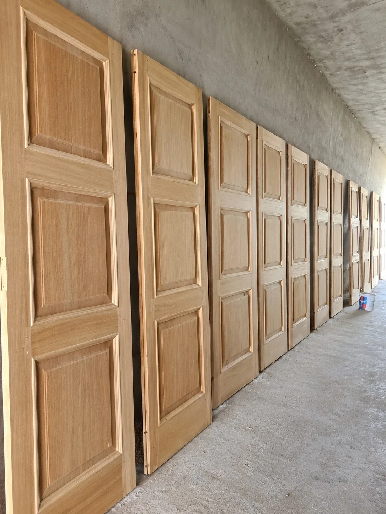
Straight answers, real work
Real work, real photos
Every photograph on this site is of our own jobs — doors, staircases, window frames and furniture we made or polished.
Clear quotations
Itemised before work begins. If something changes, we discuss and agree it with you first.
Inspected with you
Nothing is finished until you've seen it in daylight and under room lighting and are happy.
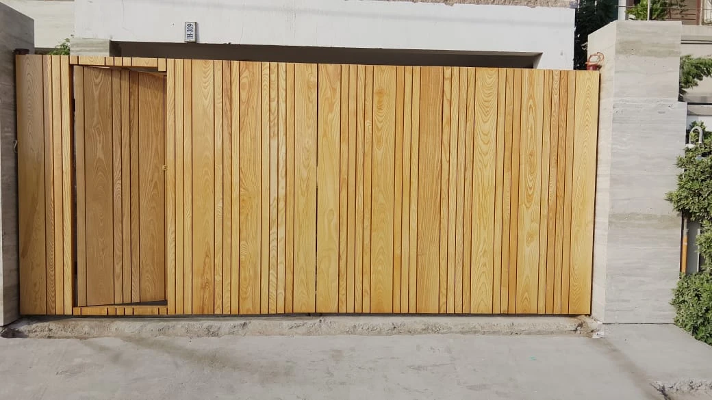
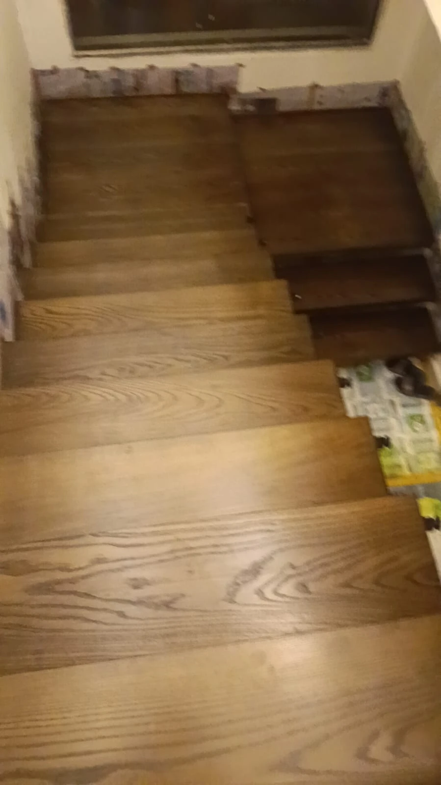
Real projects, real craftsmanship
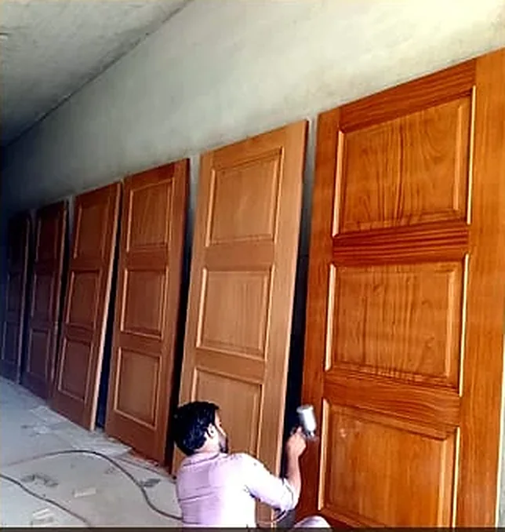
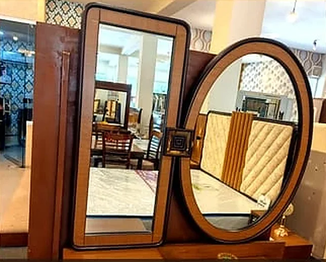
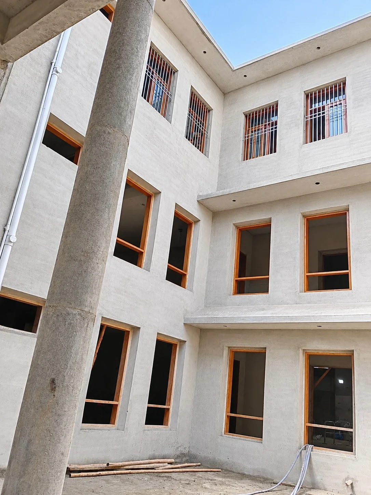
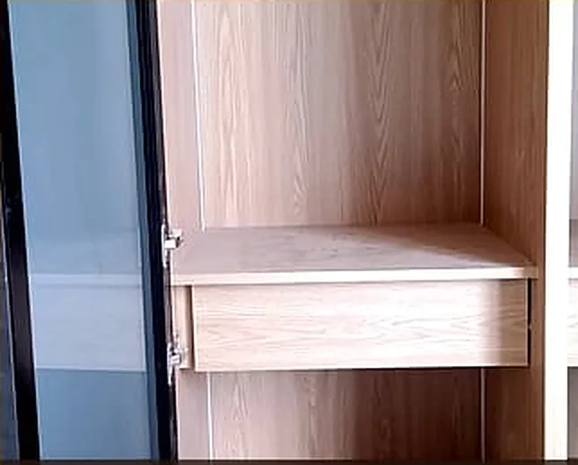
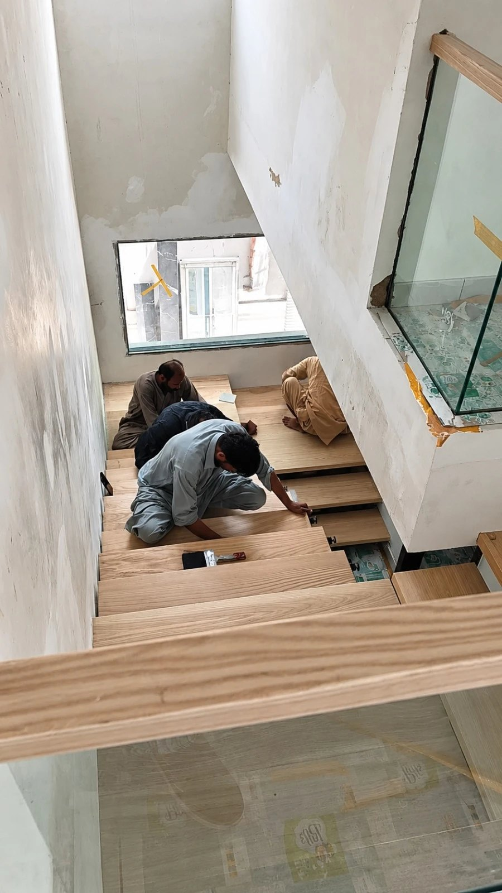